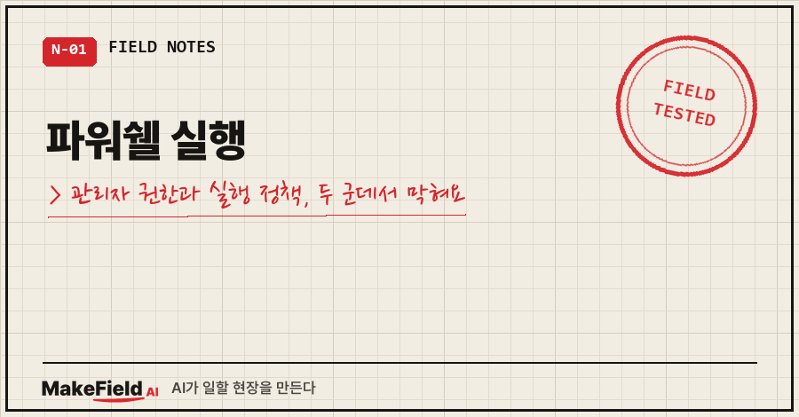
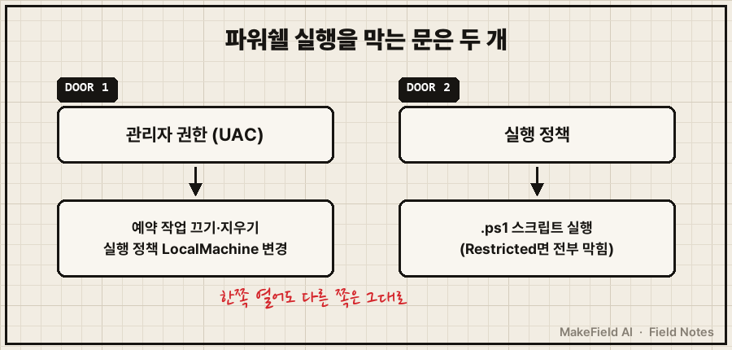
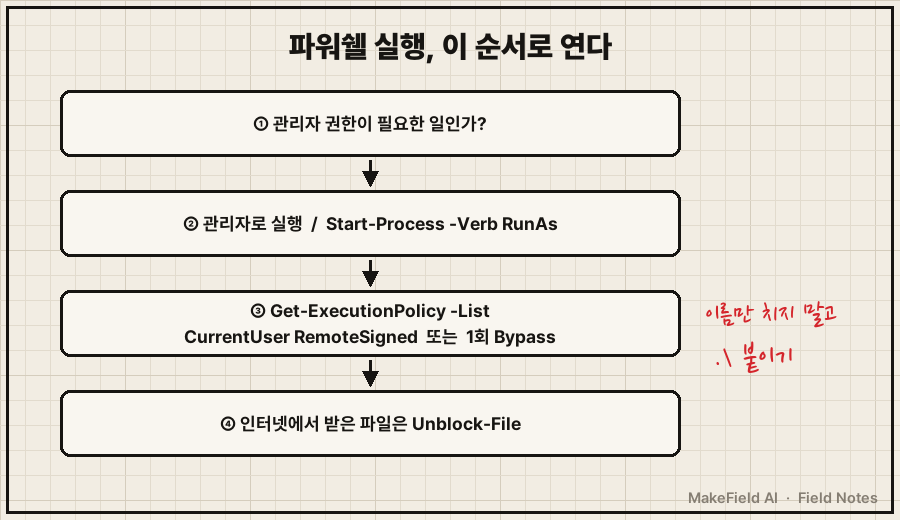
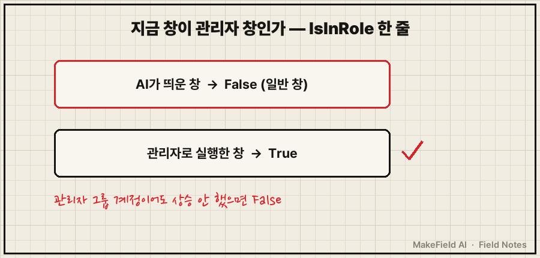

파워쉘 실행은 시작 메뉴에서 Windows PowerShell을 찾아 여는 것으로 끝나요. 다만 명령이 거절되면 그 창이 '관리자 권한'인지부터 보고, .ps1 스크립트만 거절되면 '실행 정책'을 보면 됩니다. 둘은 서로 다른 문이라 한쪽을 열어도 다른 쪽은 그대로예요. (2026년 11월, 윈도우 기본 Windows PowerShell 5.1 기준)
설비 자동화 일로 15년을 보냈고, 퇴근 뒤엔 개인 PC 정리를 AI한테 PowerShell로 맡겨 두는 편이에요. 저도 이 두 문에 따로따로 걸렸습니다.
1. 증상: 어떤 명령은 되고 어떤 명령은 거절돼요
지난 8월, 안 쓰는 자동화를 정리하던 날이었어요. 예약 작업 목록 보기는 됐는데, 끄는 Disable-ScheduledTask는 권한 부족으로 막혔습니다. AI가 띄운 PowerShell 창이 관리자 창이 아니었거든요.
그날은 그 기능을 부르는 코드 앞에 "바로 종료" 한 줄을 넣어 우회했고, 남은 3개는 제가 관리자 창을 직접 열어 지웠어요. 정리 순서는 작업 스케줄러 정리 글에 있습니다.
두 번째 문은 스크립트예요. 오늘 제 PC에서 실행 정책을 Restricted로 둔 임시 세션을 띄워 파일 하나를 돌려 보니 이렇게 나왔어요.
.\hello.ps1 : File C:\...\hello.ps1 cannot be loaded because running scripts is
disabled on this system. For more information, see about_Execution_Policies ...
+ FullyQualifiedErrorId : UnauthorizedAccess.\ 없이 이름만 치면 에러가 또 달라요.
hello.ps1 : The term 'hello.ps1' is not recognized as the name of a cmdlet,
function, script file, or operable program.2. 원인: 막는 문이 두 개예요
| 막힌 모습 | 막은 문 | 여는 열쇠 |
|---|---|---|
| 일반 창에선 거절, 관리자 창에선 됨 | 관리자 권한(UAC) | 관리자로 실행 |
.ps1만 "running scripts is disabled" | 실행 정책 | Set-ExecutionPolicy 또는 1회 -ExecutionPolicy |
| 이름만 쳤더니 "is not recognized" | 현재 폴더 규칙 | 앞에 .\ |
마이크로소프트 문서는 실행 정책이 어디에도 설정돼 있지 않으면 "windows 클라이언트의 기본값인 Restricted"가 적용되고, Restricted는 "모든 스크립트 파일의 실행을 방지"한다고 적고 있어요(→ https://learn.microsoft.com/ko-kr/powershell/module/microsoft.powershell.core/about/about_execution_policies). 또 스크립트가 현재 폴더에 있어도 경로 없이 이름만 치면 보안상 실행하지 않습니다(→ https://learn.microsoft.com/en-us/powershell/module/microsoft.powershell.core/about/about_scripts).

3. 해결: 파워쉘 실행, 이 순서로 여세요
1단계. 관리자 권한이 필요한 일인지 정합니다. 예약 작업 끄기·지우기, 컴퓨터 전체(LocalMachine) 실행 정책 바꾸기는 관리자 창이 필요해요. 목록 보기, 내 폴더 스크립트 돌리기는 일반 창이면 됩니다.
2단계. 관리자 창을 엽니다. 시작 메뉴에서 Windows PowerShell을 친 뒤 '관리자로 실행'을 고르세요(→ https://learn.microsoft.com/en-us/powershell/scripting/windows-powershell/starting-windows-powershell). 열린 창에서 새로 띄우려면 이 한 줄이에요(→ https://learn.microsoft.com/en-us/powershell/module/microsoft.powershell.management/start-process).
Start-Process -FilePath "powershell" -Verb RunAs3단계. 스크립트가 막히면 실행 정책을 봅니다. 내 계정에만 허용하려면 CurrentUser 범위로 바꿔요. 이 범위는 설정한 사용자에게만 적용됩니다(→ https://learn.microsoft.com/en-us/powershell/module/microsoft.powershell.security/set-executionpolicy).
Get-ExecutionPolicy -List
Set-ExecutionPolicy -ExecutionPolicy RemoteSigned -Scope CurrentUser설정을 남기기 싫으면 한 번만 여는 방법도 있어요. -ExecutionPolicy는 현재 세션에만 적용되고 레지스트리 설정은 바꾸지 않습니다(→ https://learn.microsoft.com/en-us/powershell/module/microsoft.powershell.core/about/about_powershell_exe). 오늘 이 줄로 같은 파일을 돌리니 ok가 찍혔어요.
powershell.exe -ExecutionPolicy Bypass -File .\hello.ps14단계. 인터넷에서 받은 스크립트는 Unblock-File로 차단을 풉니다. RemoteSigned는 내 PC에서 만든 스크립트만 서명 없이 허용하거든요(→ https://learn.microsoft.com/en-us/powershell/module/microsoft.powershell.utility/unblock-file). 내용을 안 읽어 본 파일이면 풀지 마세요.

4. 확인: 지금 창이 관리자 창인지 한 줄로 보기
([Security.Principal.WindowsPrincipal][Security.Principal.WindowsIdentity]::GetCurrent()).IsInRole([Security.Principal.WindowsBuiltInRole]::Administrator)True면 관리자 창, False면 일반 창이에요. 관리자 그룹 계정이어도 권한 상승 없이 연 창이면 False가 나옵니다(→ https://learn.microsoft.com/en-us/dotnet/api/system.security.principal.windowsprincipal.isinrole).
이 글을 쓰며 AI가 띄운 창에서 쳐 보니 오늘도 False였어요. 8월에 끄기가 막힌 이유가 딱 이거였죠..
| 확인할 것 | 명령 | 통과 기준 |
|---|---|---|
| 관리자 창인가 | 위 IsInRole 한 줄 | True |
| 스크립트 허용인가 | Get-ExecutionPolicy -List | CurrentUser 또는 LocalMachine이 RemoteSigned |
| 실제로 도나 | .\hello.ps1 | 에러 없이 결과 출력 |

5. 같은 증상, 다른 경우
- 예약 작업 끄는 순서와 "마지막 실행 결과" 숫자 읽기 → 작업 스케줄러 정리 글
- 창은 열었는데 뭘 쳐야 할지 모를 때 → 파워쉘 명령어 6개 글
- 스크립트에서 한글이 깨지거나 멀쩡한 줄에서 죽을 때 → PowerShell 한글 깨짐 글
자주 묻는 질문
Q. 실행 정책을 Unrestricted로 풀어 버리면 편하지 않나요?
저는 CurrentUser 범위 RemoteSigned까지만 씁니다. 받은 스크립트까지 경고 없이 도는 건 원하지 않아서요. 한 번만 필요하면 -ExecutionPolicy Bypass -File 한 줄이 설정을 남기지 않아 깔끔해요.
Q. AI 도구한테 관리자 권한을 주면 알아서 끄지 않나요?
저는 AI 창은 일반 권한으로 두고, 지우기처럼 되돌리기 어려운 일만 제가 관리자 창에서 직접 칩니다. 8월에도 AI는 코드 쪽 우회까지만 했고, 마지막 3개 삭제는 제 손으로 했어요.
Q. PowerShell 7(pwsh)도 똑같나요?
이 글의 실측은 전부 윈도우 기본 5.1이고, 7은 직접 돌려 보지 않았어요. 공식 실행 정책 문서 예제에서 7의 실행 파일 이름은 pwsh로 나옵니다.
파워쉘 실행이 막혀도 어느 문인지만 구분하면 해결은 한 줄씩이에요. 표대로 했는데도 거절된다면 뜬 메시지를 댓글로 남겨 주세요.
혼자 굴리는 PC 자동화에서 권한·정책 같은 문턱에 자주 걸리신다면, makefield.ai에 비슷한 막힘 기록을 이어 두고 있어요.
출처
- Microsoft Learn, Starting Windows PowerShell — "select Run as administrator" → https://learn.microsoft.com/en-us/powershell/scripting/windows-powershell/starting-windows-powershell (2026-11-21 확인)
- Microsoft Learn, Start-Process Example 5 —
Start-Process -FilePath "powershell" -Verb RunAs→ https://learn.microsoft.com/en-us/powershell/module/microsoft.powershell.management/start-process (2026-11-21 확인) - Microsoft Learn, about_Execution_Policies(한국어) — Restricted 기본값·의미 → https://learn.microsoft.com/ko-kr/powershell/module/microsoft.powershell.core/about/about_execution_policies (2026-11-21 확인)
- Microsoft Learn, Set-ExecutionPolicy — CurrentUser 범위, LocalMachine은 관리자로 실행 → https://learn.microsoft.com/en-us/powershell/module/microsoft.powershell.security/set-executionpolicy (2026-11-21 확인)
- Microsoft Learn, about_Scripts —
.\규칙 → https://learn.microsoft.com/en-us/powershell/module/microsoft.powershell.core/about/about_scripts (2026-11-21 확인) - Microsoft Learn, about_PowerShell_exe — -ExecutionPolicy는 현재 세션만 → https://learn.microsoft.com/en-us/powershell/module/microsoft.powershell.core/about/about_powershell_exe (2026-11-21 확인)
- Microsoft Learn, Unblock-File → https://learn.microsoft.com/en-us/powershell/module/microsoft.powershell.utility/unblock-file (2026-11-21 확인)
- Microsoft Learn, WindowsPrincipal.IsInRole → https://learn.microsoft.com/en-us/dotnet/api/system.security.principal.windowsprincipal.isinrole (2026-11-21 확인)
- 실측: 개인 윈도우 PC, Windows PowerShell 5.1.19041.7844, 2026-11-21 임시 폴더에서 재현 후 삭제(경로의 사용자명 제외)
태그: #파워쉘실행 #파워쉘관리자권한 #관리자권한실행 #파워쉘스크립트실행 #실행정책 #ExecutionPolicy #SetExecutionPolicy #ps1실행 #PowerShell #윈도우파워쉘 #작업스케줄러 #윈도우자동화 #막힐때해결 #클로드코드 #MakeFieldAI